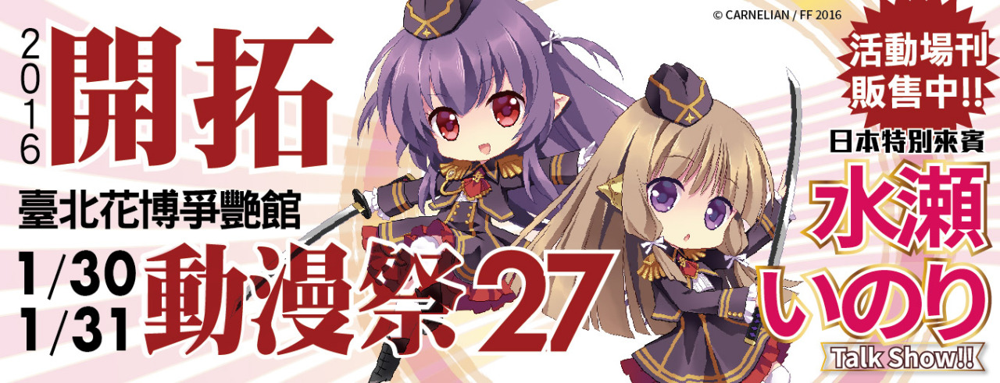
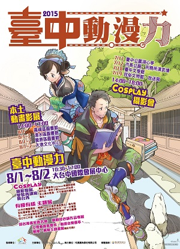
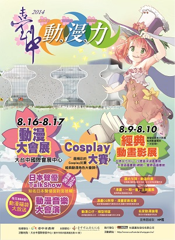
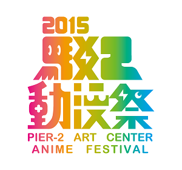
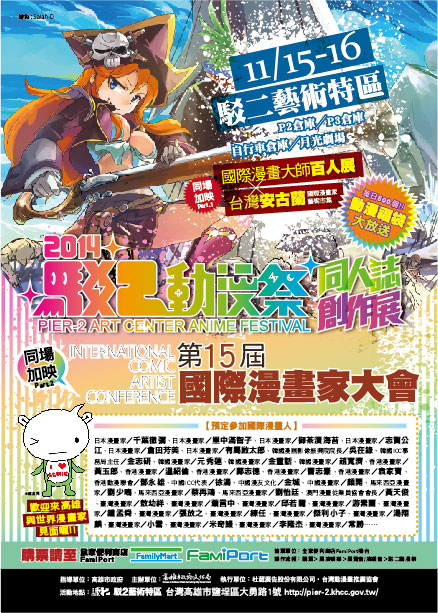
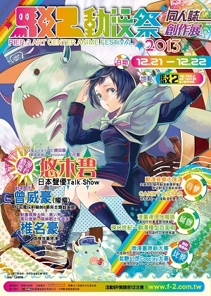
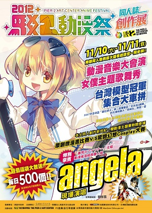
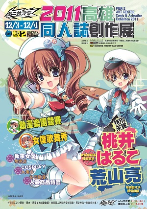

開拓動漫祭 Fancy Frontier (FF)
- Fancy Frontier 是什麼?
我們想舉辦這個活動的想法非常單純, 就是提供一個讓同人誌販售者、一般參加者以及Cosplayer都能歡樂參與的優質活動。也希望藉由我們的活動, 能夠讓社會大眾慢慢的對動漫創作的觀點開始趨向正面。以及更重要的, 維護國內漫畫界僅存的創作火苗, 讓她能逐漸的茁壯起來。
2002年10月起舉辦第一屆, 以「像Comiket般充滿生命力, 也要像國際書展一樣熱鬧」為目標, 而固定於每年的寒暑假盛大舉行的動漫畫嘉年華會。場內以同人社團為主體, 並且邀請日本的動畫製作者、聲優或是漫畫創作者, 在會場進行座談會、簽名會或聲優演唱, 也有各種各樣的舞台活動, 以讓所有的參加者都對活動有著難忘的回憶。FF原則上分別在農曆春節後的週末, 以及7月的最後一個週末舉行。活動須知 讓所有參加開拓動漫祭的人們, 都能擁有一個愉快的經驗、優質的品質、以及安全的活動, 是我們主辦單位的願望。因此, 希望所有的參與者, 無論是社團成員、一般參加者、以及Cosplayer, 都能夠遵守基本的規則。若發現有違反規定者, 工作人員會給予適當的告誡; 而屢勸不聽者, 就只好請該違反規定者強制離場。
還有, 若是見到違規的情形的話, 無論您是社團成員, 還是一般參加者, 都能希望每位參加者負起一個參與者的責任, 向工作人員告知, 工作人員會過來處理。
一個成功的、愉快的活動, 不只是我們, 也需要各位一起來達成。因此, 有參加本次即售會的社團及個人, 請務必詳閱規定:
http://www.f-2.com.tw/index.php?q=活動須知
亞洲動漫創作展 Petit Fancy (PF)
 Petit Fancy 是什麼?
Petit Fancy 是什麼?2004年10月起舉辦第一屆, 係為鼓勵同人社團進行創作, 以精緻創作為主題, 而於每年春、秋兩季舉行的同人活動。場內除同樣邀請日本的相關業界人士與聲優進行活動, 另特別企劃「同人社團原創刊物獎勵辦法」, 參加且通過審核的社團即可獲得攤位費折價券, 以鼓勵更多國內社團加入原創的行列, 而優秀的刊物也會於場刊上進行簡端的介紹與評論, 以讓更多的人認識這些優秀作品。另有「原創漫畫徵稿」活動, 入選作品可獲得PF系列活動的免費攤位及免費的廣告版面。
原創作品徵稿規則詳見:
http://www.f-2.com.tw/?page_id=102【關於PF24】舉辦已逾10年的PF, 是春秋季同人創作者競相爭豔的主要場次, 致力於各種新嘗試, 希望讓同人活動能夠更加多元、提供更熱絡的交流平台給動漫迷!
原創作品交流展 Comic Nova (CN)
 Comic Nova 是什麼?
Comic Nova 是什麼?台灣最初的「原創」主題活動「Comic Nova」憑藉著創作者的熱情與聲援, 即將邁入第六屆。各式各樣的原創活動也開始在台灣萌芽成長, 面對面和讀者對話、與香港國漫營學員交流、出張編輯部的鞭策……, 熱絡的創作能量聚集在一起, 讓大家期許經過這樣的活動能激發更多精彩的作品問世。
無論是漫畫、插畫、小說、音樂、電玩甚或周邊商品的原創創作, 都屬於原創大家族的其中一員。希望所有喜愛動漫畫的朋友們都能享受原創作品的美好, 更進一步成為原創作品的支持者!
讓我們以夢想相約, 一起燃燒心中對於創作的熱血與感動!- 最新資訊http://www.f-2.com.tw/index.php?q=category/活動/comicnova
- 主辦單位台灣動漫畫推廣協會. 開拓動漫事業有限公司
- 一般入場費用50元
模型創作祭 Reality Fantasy (RF)
- 模型創作祭是什麼?
【關於RF3】 去年甫誕生的「RF模型創作祭」, 將挾著極高的人氣與好評前進台大體育館! 除了延續第一屆包含人形GK、鋼普拉、軍械、生物、紙模型等各類模型的特色攤位外, 第二屆還將增設二手模型交流區, 方便同好來場尋寶!
臺中動漫力 2015
- 2015.08.01~2015.08.02
連續三年獲得廣大迴響的「臺中動．漫．力」將於2015年8月1、2日在大台中國際會展中心熱鬧登場!
今年展覽特設「COSPLAY攝影寫真聯展」專區, 配合景點攝影會將展出COSPLAY與臺中在地歷史、特色景點結合的美麗寫真, 並進行網路人氣投票! 每個景點人氣投票前五名的照片將成為我們攝影聯展中的焦點! 即日起開始開放照片上傳, 7/21 19:00起開放投票, 投票截止時間7/24 23:59。歡迎大家用力選出心中最美麗的照片!
此外同時招募4*6規格的COSPLAY寫真, 不限地點、不限背景、不限主題, 我們會將募集來的照片特製成本次COSPLAY攝影聯展主視覺, 讓參觀者透過主視覺感受到COSPLAY文化的美好與多元豐富的特性。有興趣參加者請將照片寄至nola@f-2.com.tw, 並附上您的暱稱與姓名, 於標題寫下「參加COSPLAY攝影寫真聯展主視覺募集」, 寄出後就算完成囉! 募集期限到7/24 23:59為止! 歡迎大家共襄盛舉!- 地點大台中國際會展中心
臺中動漫力 2014
- 2014.08.16~2014.08.17
延續兩年的強勢口碑,「2014臺中動．漫．力」將於8月16日、8月17日於大台中國際會展中心隆重登場! 兩天的活動除了動漫大會展、一期一會．台灣動漫原創雜誌特展、3D閱讀—模型特展、超人氣Cosplay大賽之外, 還有特別從美國空運來台中首度亮相的2米高「魔鬼終結者T-800」等震撼展覽, 每日還放送300個精美動漫福袋, 再度讓中部地區的動漫迷熱情沸騰!
兩日入場時間為8月16~17日 早上10:30~17:00, 10:30分入場時準時放送300個精美動漫福袋, 兩天精彩的展覽與節目也請大家不要錯過囉!!- 地點大台中國際會展中心
臺中動漫力 2013
 2013.11.16~2013.11.17
2013.11.16~2013.11.17中台灣動漫圈的一大盛事2013台中動漫力即將於本周六、日(11月16日、11月17日)華麗登場!!
各式各樣的精采活動在現場等你來, 切勿錯過喔!
重量級特別來賓 日本著名聲優能登麻美子小姐!
本次活動邀請到的特別來賓是在日本及台灣都深受觀眾熱愛的能登麻美子小姐! 代表作品有《地獄少女》閻魔愛《只想告訴你》黑沼爽子《瑪麗亞的凝望》藤堂志摩子《戰國BASARA》阿市。讓我們一同期待她的蒞臨吧!
「夢見」浮空投影宣傳活動
現在正在上演中的國人自製動畫電影《夢見》, 因為劇情的特殊性, 全片將可見到2D、3D的動畫畫面虛實交替於其中, 是相當特別的美術風格視覺試驗。
《夢見》除全程在台製作外, 並且希望推動、發表一個動畫虛擬歌手樂團—「進化元音」。會中將介紹《夢見》動畫電影, 並以浮空投影的方式, 呈現「進化元音」樂團的表演。歡迎大家來玩喔。- 地點大台中國際會展中心
- 活動內容
- 同人誌即售
- 角色扮演活動
- 動漫相關商品展售
- 動漫相關日本嘉賓來訪
- 特別來賓能登麻美子
臺中動漫力 2012
- 2012.07.14~2012.07.15
中部首見官方主催動漫主題活動! 兼具文化與歡樂的動漫慶典期待您的參與!!
為協助同人動漫文化在中部扎根, 並展現臺中動漫文化堅強軟實力, 臺中市政府決定於7月14、15日, 於全新的臺中市政府大樓舉辦「臺中動•漫•力」活動!
「臺中動•漫•力」將由開拓動漫祭籌備委員會承辦, 將會針對臺中地域特性設計各式精彩企劃, 讓我們一起來為中部的同人活動挹注全新的可能性吧!
活動當日的優惠放送及精采節目正在陸續規劃中, 請大家密切注意活動官網喔! 期待「臺中動•漫•力」將為臺中地區帶來兼具文化特色與熱鬧慶典風格的動漫狂潮!!- 主辦單位臺中市政府
- 承辦單位開拓動漫祭籌備委員會
- 地點臺中市新市政大樓 1F戶外中庭穿堂
- 一般入場費用免費
駁二動漫祭 2015
- 2015.11.28~2015.11.29
舉辦多年, 南台灣最盛大的同人盛會高雄駁二動漫祭, 即將在11月28~29日開跑啦!
往年都在大勇路上的P2、P3倉庫舉行, 而今年除了原本的表演舞台區月光劇場照舊外, 同人會場特別遷移到蓬萊倉庫B3、B4倉庫舉行!
除了原本既有的同人販售會之外, 場內還特別增加台灣動畫原創專區以及Cosplay特別展區, 回顧去年Cosplay大賽第一名御劍衝浪所帶來精彩的仙劍奇俠傳, 而場外本次也特別規畫主題式場景攝影專區, 有最受歡迎的高捷少女、迷路小瑪在萬金、屏東櫻花蝦絢櫻參與之外, 本次也特別邀請2014微漫畫得獎者籃寶所精心設計主視覺限定場景提供給大家拍照, 新場地新氣象也歡迎各位同好舊雨新知一同來參加喔!!- 地點駁二藝術特區B3•B4倉庫
- 一般入場費用100元
駁二動漫祭 2014
- 2014.11.15~2014.11.16
大受好評的駁二動漫祭, 今年即將於11月15日～11月16日再度舉辦。
今年除了慣例的原創微漫畫大賽、驚艷幻想Cosplay大賽之外, 更與第15屆國際漫畫家大會相結合, 更添活動的深度。還有豪華的雙來賓組合, 佐藤聰美小姐跟水瀨いのり小姐! 以及來自高雄「ジュリリ・ジュリラン・未来・ゴロゴロコロニー13 世」(未來) 的精采演出喔!- 地點駁二藝術特區B3•B4倉庫
- 一般入場費用100元
駁二動漫祭 2013
- 2013.12.21~2013.12.22
大受好評! 第二屆動漫音樂大匯演、可愛女僕主題歌舞表演、動漫模型百面相主題特展、熱血拚畫! 原創微漫畫比賽以及鏡頭焦點紫艷幻想Cosplay大賽! 這麼多的活動以及同人誌販售活動, 還有高雄在地歌手曾威豪、日本特別來賓知名電玩音樂作曲家椎名豪現場演出、當紅新生代日本聲優悠木碧Talk Show! 讓你目不暇給的精彩內容就在本週末舉行, 高雄駁二藝術特區就在鹽埕埔捷運站等你來喔!
- 地點駁二藝術特區B3•B4倉庫
- 一般入場費用100元
駁二動漫祭 2012
- 2012.11.10~2012.11.11
這是敝單位第5年在高雄舉辦動漫同人活動, 也是繼去年12月的「2011駁二動漫祭」之後, 第2次在駁二藝術特區舉辦活動。「2012駁二動漫祭」與去年同樣是由高雄市政府文化局主辦。
或許是兩個會場都會送前2百名免費福袋的關係, 一大早工作人員一到現場就發現兩個會場入口都是大排長龍, 直到開場前兩邊都延伸到了很遠的位置, 開場後更是人潮洶湧, P2倉庫甚至在特地區域要進行單向管制, 以免人潮將社團攤位擠翻, 而第一天的P2直到中午12點半人龍才消化完畢, 可想像當天人潮是多麼的洶湧。
這次與去年相同, 同人社團區分為兩個會場, 但今年則是分在道路兩邊的P2與自行車倉庫, 只要走一點路就能來回兩個會場, 論步行時間甚至比在台大巨蛋上下樓梯還少, 因此相較去年方便了很多。今年由於採用「報攤送攤」的方式, 因此兩天攤位數都達到近500攤, 再次刷新台北場以外的最多攤位數紀錄。另外在會場一角, 我們也設置了模型展示區, 展示許多製作精美、甚至曾得獎的模型 (關於這些模型的來歷詳見本期前面的介紹), 這次在會場也有陳列觸控螢幕介紹台灣與高雄漫畫歷史、漫畫家介紹以及高雄在地漫畫的發展歷程, 同時也展示了在這場舉辦的原創微漫畫得獎作品。
這場駁二動漫祭是我們今年最後一場同人活動, 這一年, 我們分別到了台中、桃園、高雄辦了多場大型活動, 光是同人活動就多達8場, 可說過了非常「充實」的一年, 且其中「桃園國際動漫大展」更獲行政院觀光局青睞成為台灣觀光年曆票選的桃園代表, 能以動漫活動之姿入圍國家級評選, 實在是非常難得的一件事, 要特別感謝各方的支援以及所有同好們的支持才能每一場都留下精彩的成績。而很快的明年2月新年過後就是寒假大場FF21, 也請大家繼續支持我們活動喔!
(開拓動漫情報誌2012年12月號報導)- 地點駁二藝術特區B3•B4倉庫
- 活動內容
- 同人誌即售
- 角色扮演活動
- 動漫相關商品展售
- 動漫相關日本嘉賓來訪
- 特別來賓angela
- 一般入場費用100元
駁二動漫祭 2011 (incomplete)
- 2010.08.14~2010.08.15
待補
- 地點高雄現代化綜合體育館 (高雄巨蛋)
- 活動內容
- 同人誌即售
- 角色扮演活動
- 動漫相關商品展售
- 動漫相關日本嘉賓來訪
- 特別來賓
- 桃井はるこ
- 荒山亮
- 一般入場費用100元
高雄動漫展 2010
 2010.08.14~2010.08.15
2010.08.14~2010.08.15繼前年的「動漫高雄．精采樂活」、去年的「2009高雄動漫展」之後, 由高雄市政府主辦、開拓動漫祭承辦的「2010高雄動漫展」活動, 在經過一年的時間之後, 終於又在今年的８月中旬舉辦了！由於前兩場皆在南台灣地區的動漫圈中造成極大好評, 因此這次的「2010高雄動漫展」也是從公佈日起就相當的受到矚目。這次的兩日社團報名攤位總數超過800攤, 維持了去年的水平, 而這場活動的舉辦時間雖然僅在8月中旬, 但已經屬於暑期從７月開始一連串各式大型動漫活動的尾聲, 原本也擔心是否會因為同好已經感到疲累而讓參加人數減少, 但這兩天在開場前場外是大排長龍, 幾乎將場外能供拉列的空間都用上了, 而開場後不論第一天還第二天場內皆是到處擠得水洩不通, 再次讓人驚嘆高雄活動的熱力。
(活動回顧報導刊載於
Frontier雜誌2010年8月號)- 地點高雄現代化綜合體育館 (高雄巨蛋)
- 活動內容
- 同人誌即售
- 角色扮演活動
- 動漫相關商品展售
- 動漫相關日本嘉賓來訪
- 特別來賓福井裕佳梨
- 一般入場費用100元
高雄動漫展 2009
 2016.01 vol. 174
2016.01 vol. 174待補
- 地點高雄現代化綜合體育館 (高雄巨蛋)
- 活動內容
- 同人誌即售
- 角色扮演活動
- 動漫相關商品展售
- 動漫相關日本嘉賓來訪
- 一般入場費用100元
動漫高雄‧精采樂活 2008
2016.01 vol. 174
待補
- 地點高雄現代化綜合體育館 (高雄巨蛋)
- 活動內容
- 同人誌即售
- 角色扮演活動
- 動漫相關商品展售
- 動漫相關日本嘉賓來訪
- 一般入場費用100元
東方幻華宴 2010
 2016.01 vol. 174
2016.01 vol. 174待補
Comic World Fancy 2004
 2016.01 vol. 174
2016.01 vol. 174待補